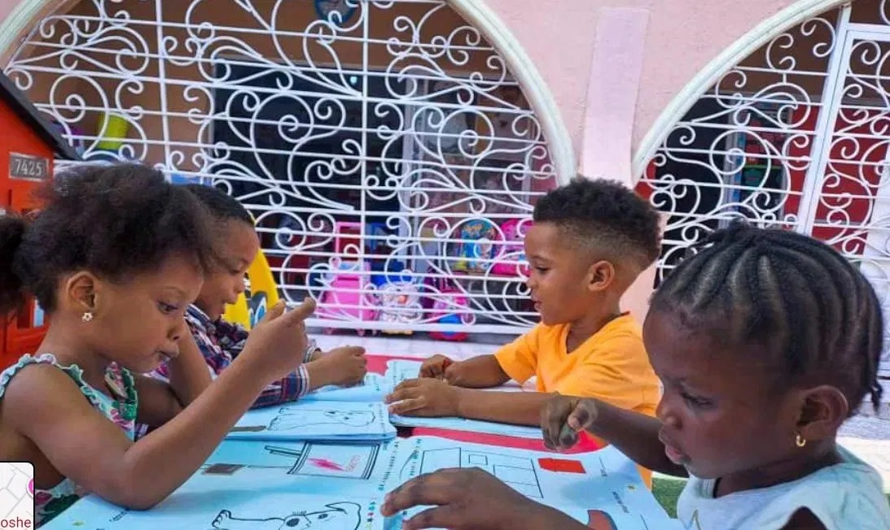
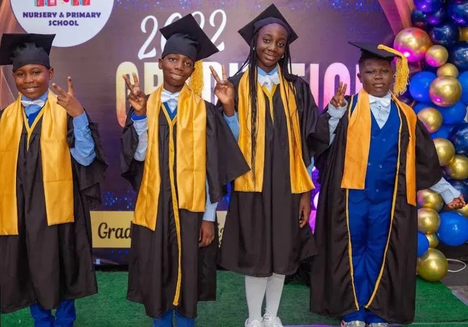
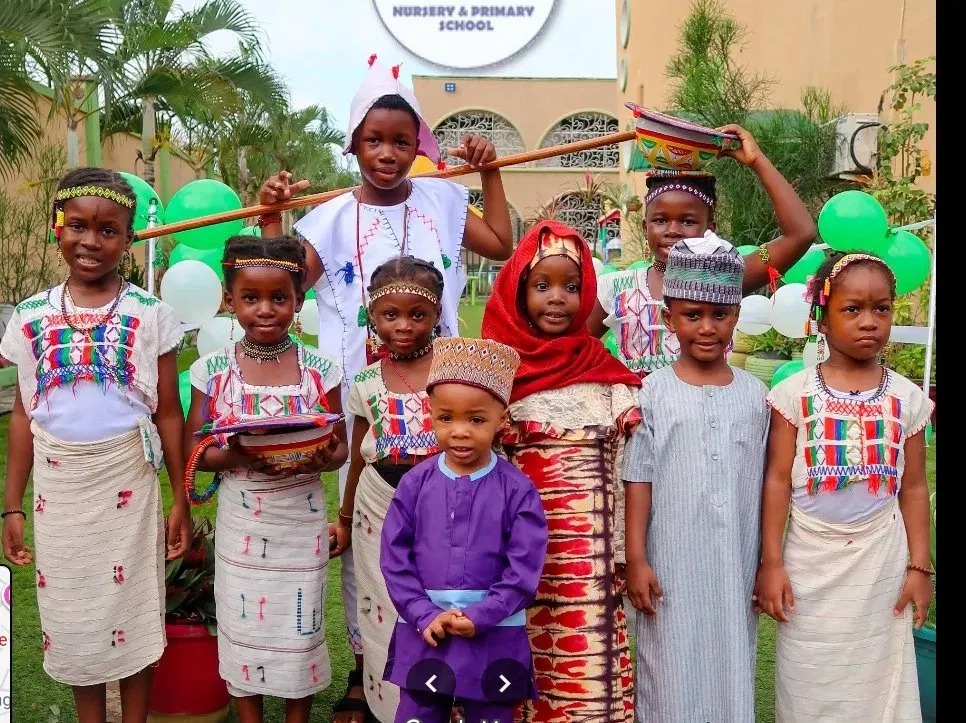

Phonics in the morning, art in the afternoon, Taekwondo at 3pm. Our day is full but never rushed — because children learn best when they have time to think, to play, and to be heard.
Our nursery years are designed around how young children actually learn — through play, song, repetition, story, and gentle structure.
Phonics is taught using the Jolly Phonics system. Maths begins with Montessori-inspired manipulatives. We weave in art, music, and outdoor play every single day. The result: children who arrive at Primary 1 confident, curious, and reading.

Six years of academic depth — built on the Nigerian curriculum, enriched with critical thinking, public speaking, and project-based work.
By Primary 6, our pupils write essays with structure, solve multi-step problems with confidence, and present in front of large audiences without fear. They leave Le Poshe ready for the most competitive secondary schools in Lagos — and well-equipped to thrive there.

Optional activities included in tuition — not bolted on as extras. Sport, art, music, martial arts. Children rotate through and discover what they love.
Certified instruction. Children grade through coloured belts and build focus, respect, and self-control.
Coached sessions on our turf pitch. Teamwork, fitness, and pure joy — for boys and girls alike.
From traditional Nigerian rhythms to choreographed performances at our annual showcase.
Painting, drawing, crafts, sculpture. A quiet, joyful space for children to create freely.

Our pupils celebrate Independence Day in full traditional dress. They learn about Yoruba, Igbo, Hausa, and minority cultures with equal pride.
We believe a confident global child must first know who they are. Cultural Days, Heritage Weeks, and our annual Culture Showcase are some of the highlights of our school calendar — and the photos parents love most.
Children settle in quietly with reading, drawing, and morning greetings.
Maths, English, and core subjects taught when minds are freshest.
Hot meals, outdoor play, and the calm transition every child needs.
Sport, art, music, Taekwondo — the joyful end to every school day.